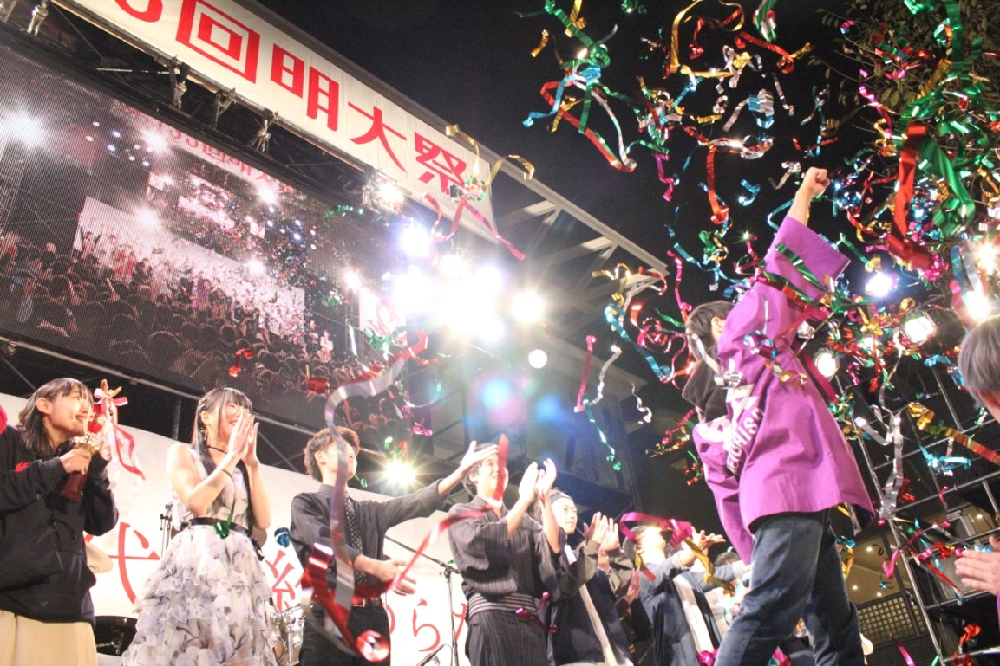
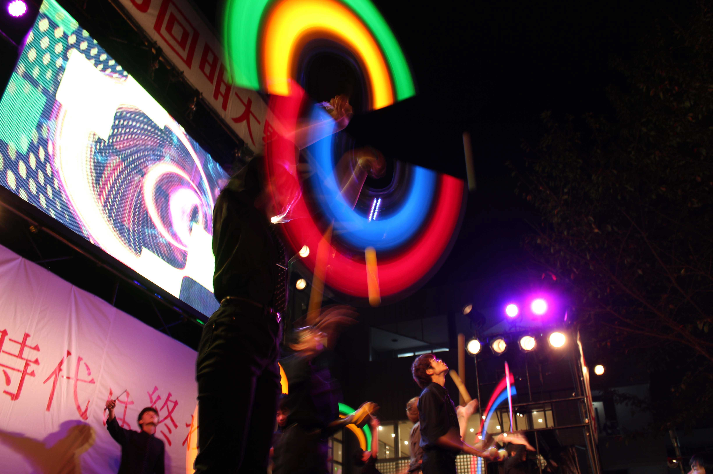
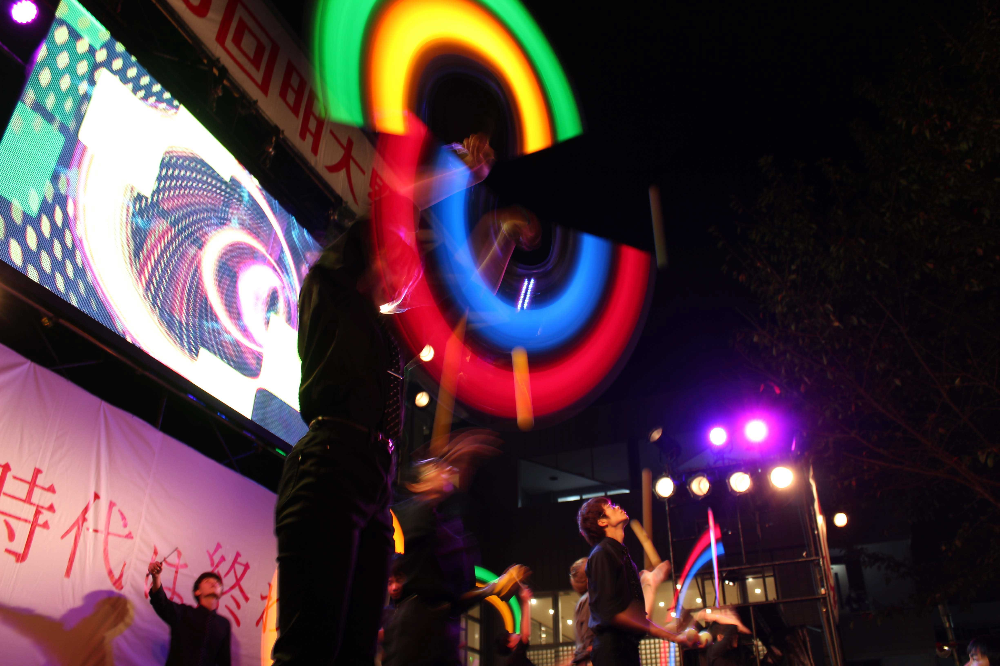
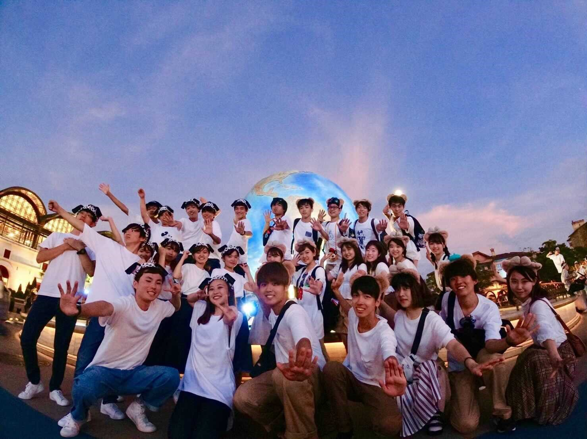

演出局紹介



演出局の役割
演出局は明大祭を魅力的にするために企画を考案・実施する局です。どのような企画コンセプトがよいのか、照明、ビジョン、音響や、企画の実施場所、日時などの企画に関するあらゆる要素をどう活かせるのかを考え、明大祭を盛り上げる局です。また、明大祭当日までの自分たちの活動の成果が企画となって目の当たりにしたとき、今までにない感動を得ることができます！
演出局の活動内容
演出局の局会議では、明大祭を盛り上げるためにはどのような企画を作るべきか、どのような魅せ方が最適か。といったことを3年生が中心となって1・2年生に発信したり、学年の壁を越えて意見交換を行ったりしています。その中で、自分の考えを持ち、発信する力を身に付け、人の意見を聞くことで自分の世界を広げることができます。
演出局の会議日
局会議：毎週木曜日19:00～（予定）
部門会議：週1回（曜日未定）
レクの様子

※2019年度のレクの様子です。
演出局では例年バーベキューやテーマパークなど、局員全員が楽しめるさまざまなレクを行っています。オンラインでの活動がメインの現在は、会議の時間外に人狼などのオンラインレクを行っており、和気あいあいと活動しています。